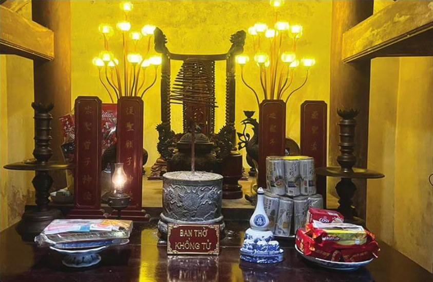

CỐ ĐÔ HOA LƯ
孔子廟

ホアルー古都の歴史・文化遺跡を巡礼する際、丁朝と前黎朝の名君や才能ある将軍を称える廟のシステムに加えて、観光客は東洋の人生哲学の強い痕跡を持つ神聖な空間、すなわち孔子廟に足を踏み入れることができます。
黎大行王廟の敷地内にあるこの建物の存在は、ベトナム民族の文化受容の歴史の厚みを物語る生きた証拠です。さらに、ここは古くからすべてのベトナム人の心に染み付いている「尊師重道（師を尊び道を重んじる）」の精神と、長い学問重視の伝統の具現化でもあります。
孔子廟を訪れると、観光客は19世紀のグエン朝の芸術建築の古風な美しさに驚かされることでしょう。建物の貴重な木製フレームシステム全体は、鉄の釘を一切使用せず、伝統的なほぞ穴技術のみで作られています。この精巧な技術は、昔の職人の達人レベルの腕前を示しています。
空間の面では、廟は拝堂と後宮という2つの主要な建物で構成されています。
拝堂が広々とした厳かな空間で観光客を迎え、敬虔な儀式の準備をする場所であるとすれば、後宮は深遠で静寂な空間を開きます。ここは孔子と彼の4人の優秀な弟子、すなわち顔回（がんかい）、曾子（そうし）、子思（しし）、孟子（もうし）の祭壇と位牌が配置されている場所です。

孔子（紀元前551年生まれ、紀元前479年没）は、字を仲尼（ちゅうじ）といい、現在の中国山東省にあたる魯国で生まれました。彼は偉大な哲学者、思想家、優れた教育者であり、また、かつて東洋の封建王朝の思想的基盤として重要な役割を果たした政治・道徳理論である儒教の創始者でもあります。彼の哲学を貫いているのは「仁」の思想であり、それに正名定分の説と三綱五常が結びついています。孔子の見解によれば、名分が正しく定められた社会こそが安定した、太平で繁栄した社会です。その中で、三綱のシステムは君と臣、父と子、夫と妻の間の主要な関係を明確に定め、五常は君子が常に修練しなければならない5つの道徳基準、すなわち仁、義、礼、智、信です。
政治家や哲学者にとどまらず、孔子は偉大な教育者でもありました。階級を区別しない教育観（有教無類）を持ち、彼は常に学問を重んじる精神を高く評価しました。農作業をするにも学ぶ必要があり、官僚として統治するにもなおさら学ぶ必要があると考えました。これは、当時の社会において時代を先取りした非常に進歩的な思想でした。
偉大な師の思想に同行したのは、儒教の学説の保存と伝播に多大な貢献をした傑出した弟子たちでした。
四配（孔子のそばに配祀される4人の聖人）の筆頭は顔回（紀元前521年 - 紀元前481年）であり、彼は魯国出身で、孔子の最も優秀な弟子でした。彼は聡明で機敏であり、一を聞いて十を知る人物でした。後世の人々は顔回を孔子の道の理想的な継承者と見なしています。顔回はわずか32歳で亡くなりましたが、儒家によって「聖」として尊ばれ、四配の筆頭に位置づけられています。
次は曾子（紀元前504年 - 紀元前435年）です。
孔子の弟子たちの中で、曾子は孔子の学説を貫く道理を詳細に理解し、深く領会した人物でした。彼は孔子が弟子に教えた言葉を記録した『大学』と『孝経』という2つの古典的著作を残しました。世間の人々は、曾子の学派が孔子の学説の精髄を保存したと考えています。
続いては子思（紀元前483年 - 紀元前402年）です。
彼は孔子の学説の正統な継承者と見なされています。子思が編纂した『中庸』は、儒家の人生観を代表する有名な著作です。彼の思想は中国の思想史において重要な位置を占めています。彼はかつて孔子の学説を広く伝播させました。儒家は通常、彼を孔子の思想と事業を伝承した功績があるとして「述聖」と呼んでいます。
最後は孟子（紀元前372年 - 紀元前289年）です。彼は鄒（すう）国の出身で、孔子の学説の伝播と発展に大きな影響を与え、後世の儒学者たちから「亜聖（聖人に次ぐ者）」として尊ばれています。
ホアルー古都の歴史的空間において、孔子廟は単に儒教の先賢たちを祀る場所ではなく、過去と現在を繋ぐ架け橋でもあります。ここは、後世の世代が深い人生の哲学の価値を学び、人としての道理と先人たちの文化の精髄を吸収する機会を提供しています。
孔子と優秀な弟子たちを国家歴史遺跡の心臓部に敬意を持って祀ることは、ベトナムの濃厚な民族的アイデンティティを持つ文化を豊かにするために、人類文化の精髄をオープンかつ積極的に取捨選択して受け入れるという伝統を明確に示す証拠であると断言できます。